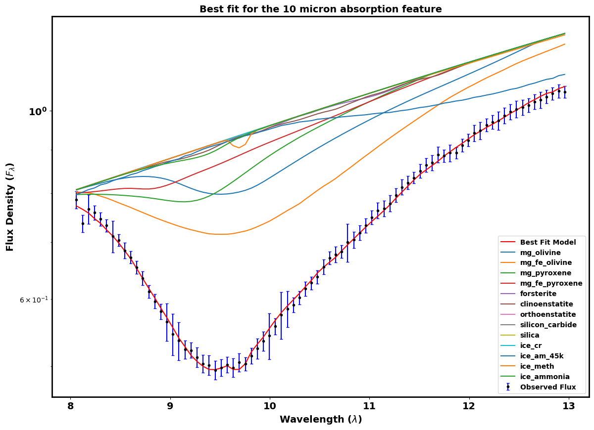

Fitting of different Ice and Dust species in the 10 micron Absorption region
Using the lab generated values of differnt dust and ice species
we have performed MCMC to find out the perfect fit and thus our desired parameters.
Which have resulted us with the composition of those species in the envelope of each
protostars.
Using those results we have done a statistical study of all the protostars from the major
star forming regions within 500 parsecs.